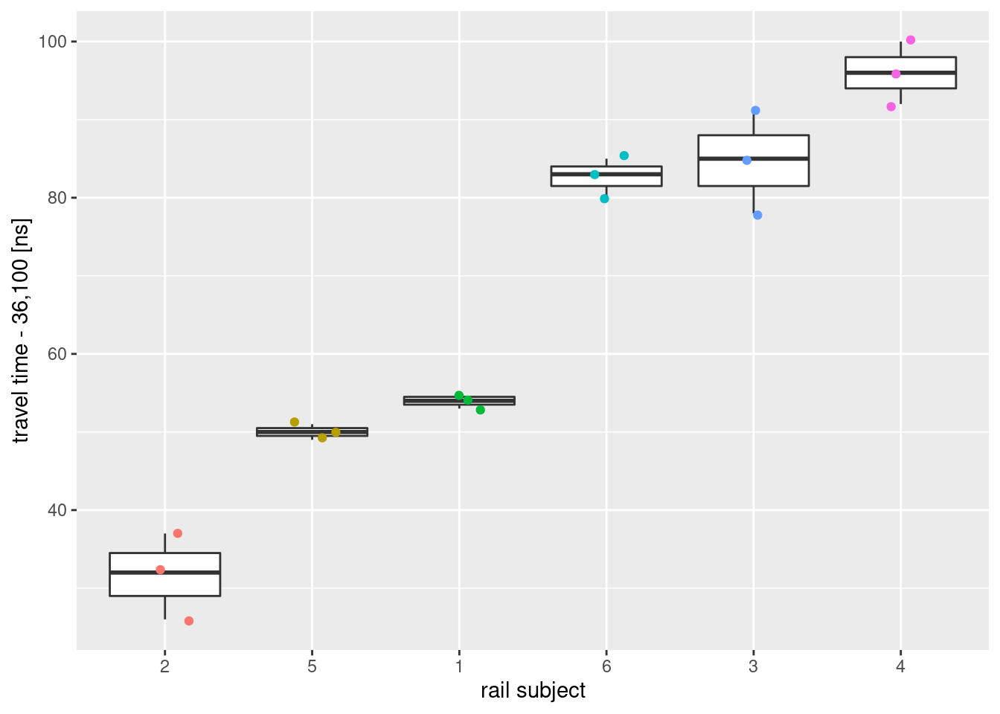

당신이 어떤 중요한 실험을 준비하고 있다고 해보자. 시편 하나를 준비하는데 비용이 크게 든다면 통계적으로 유의미한 수의 시편을 확보할 수가 없다. 이렇게 준비된 시편 하나에 여러번 반복 측정을 수행해도 시편 간 측정치의 차이가 시편 내 측정치의 차이보다 더 큰 경우가 생길 수 있다. 이와 같이 데이터의 구조는 일원배치 분산 분석(one-way anova)과 비슷하나 처치의 효과에는 관심이 없을 때 혼합 모형이 작동한다. 혼합 모형에서는 설명 변수가 고정 효과(fixed effect)와 임의 효과(random effect)로 구성된다고 본다[1].
이것이 무슨 뜻인지 nlme 패키지의 Rail 데이터 셋을 통하여 파악해 보자. 단위 선로 6개 시편(Rail)을 제작한 후 임의로 선택하여 음파 전달 시간(travel)을 3회씩 측정하였다.
library(tidyverse)
# library(nlme) # Rail dataset
library(lme4) # sleepstudy datset
data("Rail", package = "nlme")
rail <- Rail %>%
as_tibble() %>%
mutate(Rail = factor(Rail, ordered = FALSE))
rail %>%
head()## # A tibble: 6 x 2
## Rail travel
## <fct> <dbl>
## 1 1 55
## 2 1 53
## 3 1 54
## 4 2 26
## 5 2 37
## 6 2 32rail %>%
ggplot(aes(x = Rail, y = travel)) +
geom_boxplot() +
geom_jitter(aes(color = Rail), width = 0.2) +
ylab("travel time - 36,100 [ns]") +
xlab("rail subject") +
theme(legend.position = "none")
음파 전달은 물리적인 값으로 우리가 표준이라고 믿는 선로에서 하나의 값을 갖는다고 볼 수 있다. 다만 제조상 재료의 조성이나 형상에 불확실성이 존재하여 그로부터 측정치의 분산이 발생한다고 하자. 혼합 모형 식을 사용하면 다음과 같이 기술된다.
mod_formula <- travel ~ 1 + (1 | Rail)고정 효과의 1은 대푯값이 하나 있다는 뜻이다. 임의 효과는 괄호안에 기술된다. 전체 분산은 Rail에서 나오는데 하나의 Rail에서 반복 측정할 때 측정치가 가우시안 분포를 따른다는 뜻이다. lme4 패키지를 이용하여 적합해보자.
mod_1 <- lmer(mod_formula, data = rail)
summary(mod_1)## Linear mixed model fit by REML ['lmerMod']
## Formula: travel ~ 1 + (1 | Rail)
## Data: rail
##
## REML criterion at convergence: 122.2
##
## Scaled residuals:
## Min 1Q Median 3Q Max
## -1.61883 -0.28218 0.03569 0.21956 1.61438
##
## Random effects:
## Groups Name Variance Std.Dev.
## Rail (Intercept) 615.31 24.805
## Residual 16.17 4.021
## Number of obs: 18, groups: Rail, 6
##
## Fixed effects:
## Estimate Std. Error t value
## (Intercept) 66.50 10.17 6.538고정 효과와 임의 효과가 나뉘어 정리되어 있다. 고정 효과에서 추정 값은 66.5이고 시편에 따라 24.8정도 차이가 발생할 수 있으며 이때 동일 시편 내 측정에서는 표준 편차 4.0을 보일 수 있다라고 읽을 수 있다. 이는 선형 회귀를 단순히 적합해서는 얻기 어려운 해석이다.